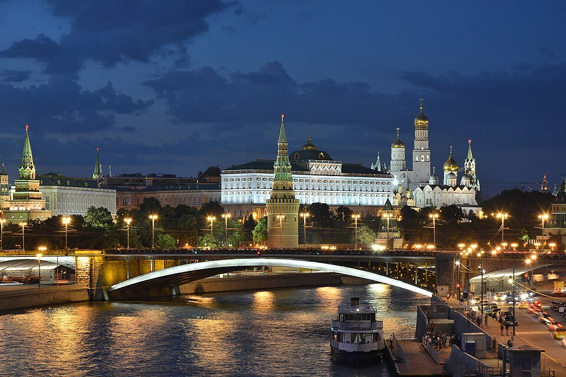

In den Vereinigten Staaten mehren sich die Stimmen, die eine Revision der bisherigen Außenpolitik gegenüber Moskau fordern. Wie das Madrider Blatt El Sol meldet, hat eine amerikanische Studiengruppe soeben eine Denkschrift an Präsident Coolidge gerichtet.[1] In diesem Schreiben verlangen die Unterzeichner die sofortige diplomatische Anerkennung der Sowjetunion durch das Washingtoner Kabinett.[1] Die sogenannte ‚Beobachtergruppe‘ setzt sich vornehmlich aus Sozialarbeitern, Verlegern und Geschäftsleuten zusammen.[1] Nach dem Bericht sind ihre Mitglieder unlängst von einem längeren Studienaufenthalt in Russland nach Nordamerika zurückgekehrt.[1] Die Verfasser des Briefes verweisen nachdrücklich auf die Tatsache, dass sämtliche anderen großen Nationen die Moskauer Regierung längst anerkannt und reguläre Handelsbeziehungen etabliert haben.[1] Ein weiteres Hinauszögern der diplomatischen Beziehungen sei daher mit den wirtschaftlichen Interessen der Vereinigten Staaten unvereinbar.[1] Bislang weigerte sich das amerikanische Außenministerium standhaft, den Machthabern im Kreml einen völkerrechtlichen Status zuzubilligen. Die diplomatischen Verbindungen waren im Zuge der Ereignisse von 1917 vollständig abgebrochen worden. Amerikanische Wirtschaftsvertreter fürchten nun offenkundig, auf dem weiten russischen Markt gegenüber der europäischen Konkurrenz dauerhaft ins Hintertreffen zu geraten.
Annäherung im Osten? Forderung nach Anerkennung der UdSSR
Amerikanische Studiengruppe wendet sich an Präsident Coolidge — Handelspolitische Nachteile befürchtet
Washington, 1. Oktober.

Historische Einordnung
Die diplomatische Anerkennung der Sowjetunion durch die Vereinigten Staaten erfolgte erst deutlich später, im Jahr 1933 unter Präsident Franklin D. Roosevelt. Bis dahin blieben die offiziellen staatlichen Beziehungen eingefroren, obwohl amerikanische Unternehmen im Rahmen der ersten sowjetischen Fünfjahrespläne umfangreiche Geschäfte mit Moskau machten.
Quellenverweise:
- El Sol (Madrid) (Hemeroteca Digital (BNE)) 1926-10-01